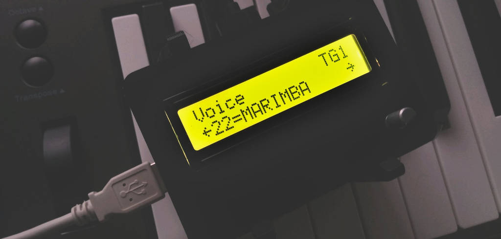
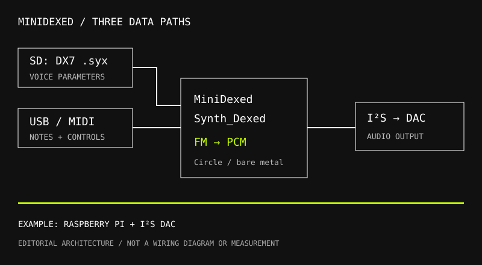
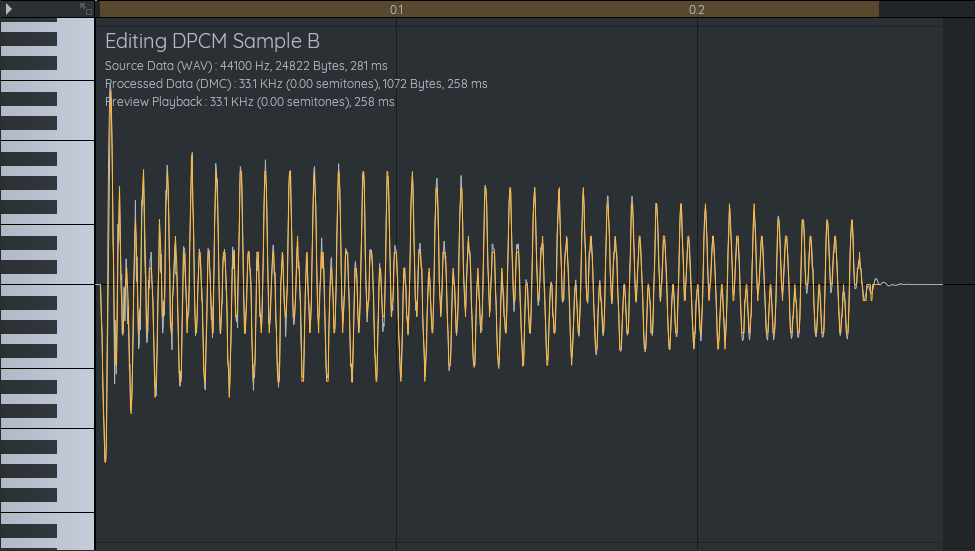
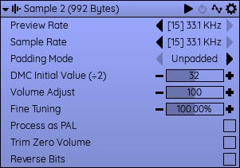
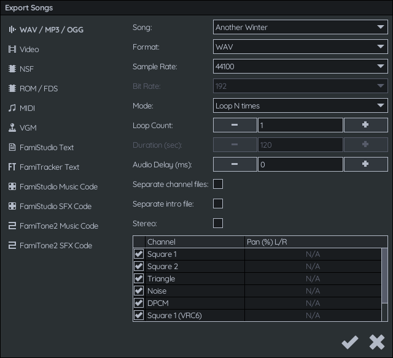
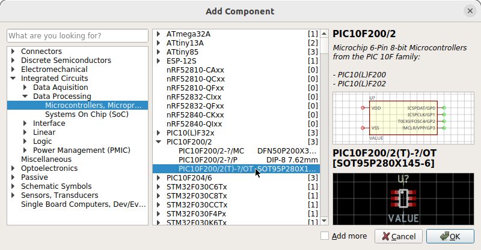
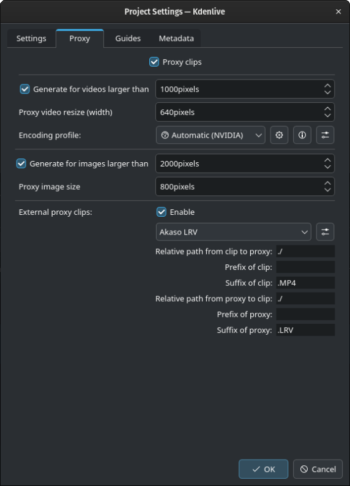
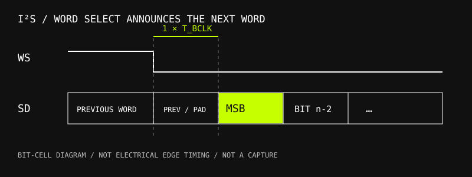
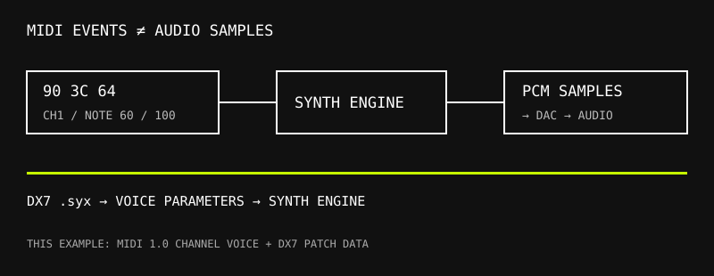

03 / DSP · GRAME
Faust：用信号关系描述算法
Faust 把实时 DSP 写成信号处理关系，再生成 C / C++、WebAssembly 等目标代码。官方入门从噪声源接低通讲起：: 表示串联，输入输出数量需要匹配。它让“信号怎么走”直接进入源码，而不是先手写一套音频回调。
可以从一个简单效果器读起，再看目标架构怎样接入声卡或插件宿主。算法能生成代码，与目标设备已具备驱动和实时性能，是两个层面的事。选择部署目标前，先确认对应的 architecture 文件与依赖。

MiniDexed 项目 README 配图 / 封面灰度显示
TOOL LAB / 工具实验室
2026.11.18 · WED · ISSUE 002
MiniDexed 的音色、控制与声音输出。
FamiStudio 的采样编辑，四款制作工具，
以及 SID 硬件迭代与 Riley 的静止波纹。
一块树莓派可以运行 FM 音源，一段 WAV 可以变成 NES 采样。两件事背后，有不同的数据格式、处理过程和硬件边界。本期先拆开两个项目，再看建模、画板、剪辑与声音接口中的具体问题。
同样叫“音色文件”，它未必装着一段录音。MiniDexed 读取 DX7 音色参数，再由合成引擎生成声音。
这个开源项目把 Synth_Dexed 音源和 Circle 平台结合起来，直接运行在 Raspberry Pi 上，不经过 Linux 内核。项目说明，Pi 2 及后续适用机型可运行最多八个音源实例，借鉴 Yamaha TX816 / TX802 的组合方式；Pi 1 与 Zero 则只有一个实例。这里的树莓派是单板计算机，不能把软件镜像烧进 Pico 就期待得到同样的合成器。

| 路径 | 传什么 | 从哪里查 |
|---|---|---|
| SD 卡 → 音源 | .syx 中的 DX7 音色参数 | 音色库目录与加载说明 |
| MIDI → 音源 | 音符、控制器、音色切换 | MIDI 接口与通道配置 |
| 音源 → 音频接口 | 生成的音频样本 | 输出设备、声道与采样配置 |
项目支持把多个音源作不同的调音与声像设置，并保存 performance 配置。值得学的不是“把八个声音叠得更厚”这一句话，而是每层如何接受控制、又如何进入最终混音：音色参数、演奏事件和连续音频不能共用一种更新节奏。
作者开发文档把主合成逻辑放在 minidexed.cpp，用户界面放在 userinterface.cpp。可以先沿 ProcessSound() 找音频处理，再读显示、编码器和按键事件怎样进入系统。这样能区分实时路径与界面工作，也更容易理解为什么调试输出可能干扰音频。
硬件部分同样适合做阅读练习：PCM5102A / PCM5122 I²S DAC、字符液晶和编码器都是可选配置，并非一张通用接线表适用于所有 Pi。先列出已有机型和输出方式，再对照项目的配置项。当前 README 仍把 Pi 5 支持列为实验性，不能据此许诺相同功能或性能。
项目说明 / 固定提交 ↗硬件文档 ↗开发文档 ↗README 收录的 Floyd Steinberg 视频 ↗项目选读；未在本刊硬件上运行，视频作为作者项目入口。
给复古游戏做声音，导出一段音频和导出可由游戏音源播放的数据，是两件事。
BleuBleu 的 FamiStudio 是面向 NES / Famicom 音乐的开源编辑器。它提供钢琴卷帘界面，也处理 DPCM 采样：导入 WAV 或 DMC，调整样本，再把样本分配到乐器的按键。对声音采样感兴趣，可以先读这条短路径，不必一开始就写完整配乐。

Preview Rate 决定按预览按钮时以什么速率播放，不改变样本处理；Sample Rate 才决定重采样。降低后者会改变结果数据的大小与细节，而只改前者，听到的速度和音高可能变了，处理后的数据却没有变。PAL 与 NTSC 的可用速率还有差异，项目设置应随目标制式一起记录。
编辑器基于导入的源数据重新处理，调整参数时不必不断叠加上一轮的损失。反过来，已经压成 DMC 的材料本来就受限制，反复加工它并不会恢复原来 WAV 的信息。一个实用习惯是保留源 WAV、工程与导出结果，别只留下最后的 DMC。


给朋友试听可导出 WAV / MP3 / OGG；要继续混音，可导出分声道文件或单独的前奏。NSF / NSFe 则面向相应播放器，ROM / FDS 面向模拟器或匹配的硬件流程。文件能被音频软件打开，不等于已经生成游戏可用的数据；选择导出格式，要从接收它的软件或设备倒推。
项目官网 ↗DPCM 文档 / 固定提交 ↗导出文档 / 固定提交 ↗本条为官方文档阅读，未宣称本刊进行了 NES 硬件播放测试。
03 / DSP · GRAME
Faust 把实时 DSP 写成信号处理关系，再生成 C / C++、WebAssembly 等目标代码。官方入门从噪声源接低通讲起：: 表示串联，输入输出数量需要匹配。它让“信号怎么走”直接进入源码，而不是先手写一套音频回调。
可以从一个简单效果器读起，再看目标架构怎样接入声卡或插件宿主。算法能生成代码，与目标设备已具备驱动和实时性能，是两个层面的事。选择部署目标前，先确认对应的 architecture 文件与依赖。
04 / PARAMETRIC CAD
OpenSCAD 用脚本、布尔运算与拉伸构造实体，适合经常要修改孔距、壁厚和接口位置的小外壳。参数化的价值在于记录关系：连接器移动以后，开孔应随它移动，而不是手工再挪一次。
值得在源码里找的是基准面、重复结构与公差参数。标称尺寸不代表打印后就能装配；连接器外形、螺钉头和线缆弯折也要留空间。先阅读官方示例怎样组合几何，再把自己的板框和安装约束写进去。
05 / EDA · LIBRARY DESIGN
LibrePCB 的库概念把符号引脚、元件信号和器件焊盘之间的映射分开保存，不靠名字相等就自动认定相连。同一种封装可以有多套焊盘布局，符号也可有不同标准的画法。
这个结构适合用来理解“画得像”和“接得对”的区别。找一颗 SOT-23 晶体管，对照数据手册、符号与具体器件的脚位分配；核对的是映射关系，不能只看封装名。软件以稳定标识符维护引用，重命名也不等于重建一个元件。

06 / BUILD VIDEO · KDE
制作录像常有长段焊接、屏幕录制和高分辨率素材。Kdenlive 可为源片生成较小的代理文件，让剪辑先用代理；正式渲染再换回原始素材。代理解决编辑负担，并不是把最终作品永久压成低清。
官方设置允许按素材宽度自动生成，也可对项目箱中的单条素材启停。整理项目时，原片路径与代理缓存要分别考虑：代理不是原片备份。迁移到另一台电脑前，保留源素材与工程，避免只带走一个能预览却无法完整渲染的目录。

I²S 的 WS 表示左右声道，但 WS 翻转不是新样本 MSB 立刻开始的位置。NXP 规范规定：下一个字的最高位在 WS 改变一个位时钟周期后发送，数据最高位在前。识别接口时，“有时钟、有数据”还远远不够。

接 DAC 前，分别写出协议格式、每槽位数、有效位数和谁生成时钟。左对齐格式与标准 I²S 的对齐关系不同；把两者配反，可能出现错位的数据。若芯片还有 MCLK 要求，也应查它自己的数据手册，不能因为基础 I²S 画了三根线，就认为任意 DAC 都只需三根。
NXP UM11732 / Rev. 3.0，2022-02-17 ↗重点读 3.1、3.2 节。本条是规范阅读，非本刊逻辑分析仪测量。
在 MIDI 1.0 的 Channel Voice 消息中，Note On 传通道、音符编号与力度，Program Change 传音色程序编号。声音如何生成，是接收端音源的工作。例子 90 3C 64（十六进制）表示第 1 通道、音符编号 60、力度 100 的 Note On；这三个字节并不描述声音波形。

回看 MiniDexed：这里的 DX7 .syx 负责音色参数，演奏控制负责何时发声，音频输出负责实际样本。不要把这条经验推广成“所有 SysEx 都不传采样数据”——SysEx 是可扩展消息机制，具体内容由相应规范定义。排查“有 MIDI 活动、没有声音”，也应先确定故障落在哪条路径。
MIDI Association 消息概览 ↗MiniDexed 音色文件说明 ↗消息概览不代替完整实现规范。
LouD 的制作记录从洞洞板、FTDI 控制一直写到 Pico 驱动真实 SID 芯片。最值得读的是版本间改变了什么：v1.3 已能混用需要 12 V 的 6581 与 9 V 的 8580；后续版本继续调整供电配置、滤波元件切换与插座空间。这些不是换一张板色的升级，而是模拟器件差异进入 PCB 设计的具体位置。
文章还解释 USB 工作、音源处理与 DMA / PIO 总线操作的分工。可以沿作者仓库把一条 USB 控制请求追到 SID 寄存器写入，看“主机有空再处理”和“外设时序不能漂移”如何被隔开。作者的硬件与体验结论属于作者记录，本刊没有复测。
读仓库要带上版本号：v1.3 的硬件有 OSHWA 认证；后续硬件的许可不能直接套用这个认证。文章、固件、PCB 与外壳也可能各有许可，做自己的改板之前分别确认。
Riley 手绘的黑白线条让平面产生振动与纵深的错觉。MoMA 的作品说明把重点放在画面与观看者之间：运动感来自视觉关系，并不需要画布真的改变。作为欧普艺术，这件作品的重心在观看的过程：相邻线条的关系，怎样让静止的颜料产生不稳定的感受。
《Current》曾参加 MoMA 1965 年的 The Responsive Eye 展览。读作品资料时，可以追一条线，再看相邻线条怎样改变整体节奏；局部和整体会把注意力引向不同位置。它是 1964 年的手绘作品，不是数字生成图，也不是声音的可视化。
作品与展览信息：MoMA，馆藏编号 576.1964。